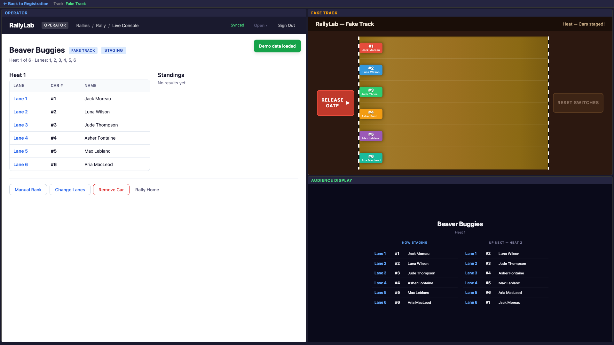

Evaluation Guide
A hands-on walkthrough of RallyLab. Follow these steps to experience the full flow — from creating a rally to running a race and seeing results on the audience display. No account or hardware needed; everything runs in demo mode right in your browser.
Looking for the full reference? See the User Guide →Enter Demo Mode
From the RallyLab home page, click "Sign In" (or "Try the Demo"). You'll see the login screen with two options: sign in with email, or try the demo.
- Click "Try Demo" at the bottom of the login screen.
- RallyLab creates a sample rally with three sections (Beaver Buggies, Kub Kars, Scout Trucks), several groups, and pre-populated rosters.
- You'll land on the Rally Home screen showing the demo rally dashboard.

Explore Pre-Race Setup
The rally home screen is the organizer's dashboard. Take a moment to look around:
- Sections — the demo rally has three sections (Beaver Buggies, Kub Kars, Scout Trucks), each with participants already registered.
- Groups — participants are organized by their Scout group (e.g., "1st Newmarket").
- Operators & Registrars — you can invite collaborators to help manage registration and race day.

Click on any section name to see its roster. You'll see participants listed by group, each with an assigned car number.

Open the Debug View
RallyLab's debug view shows the operator console, a fake track simulator, and the audience display side by side in a single window. This is the best way to see the whole system in action.
- From the Rally Home screen (step 2), click the "Race Day" button. This opens the Operator Console.
- Click "Load Demo Data". Leave the defaults in the dialog and click "Load".
- You'll land on the Operator Rally Home. Click the "Open" menu in the top nav bar and select "Debug View".
- The debug view opens with three panels: the Operator console on the left, the Fake Track at top-right, and the Audience Display at bottom-right.


operator.html) and audience (audience.html) in separate tabs instead.
Check In & Start a Section
This is the Operator's job — the only setup needed before the Track Operator takes over.
- In the Operator panel, click "Check In" on any section. Check the boxes to mark participants as arrived. (With demo data, some may already be checked in.)
- Once at least 2 participants are checked in, click "Start This Section".
- The lane selection dialog appears — leave all lanes checked and click "Start Racing".


The first heat is now staged. The operator console shows the lane assignments, and the audience display shows the same information to the crowd. From here, the Track Operator runs the race — the Operator doesn't need to click anything during normal heat progression.

Run Heats from the Fake Track
In a real race, the Track Operator is the person standing at the physical track — loading cars onto lanes, releasing the start gate, and resetting the finish switches between heats. The Operator at the computer doesn't need to touch anything; the track controller handles timing and heat advancement automatically.
In the debug view, you play both roles. The fake track panel simulates the physical track. Here's the cycle for each heat:
- Release Gate — Click the "Release Gate" button in the Fake Track panel. Cars animate down the track and finish times are generated automatically.
- See Results — Results appear on both the operator console and the audience display simultaneously. The standings update with cumulative averages.
- Reset Switches — Click the "Reset Switches" button. The next heat stages automatically — no operator click needed.
- Repeat — Keep clicking Release Gate and Reset Switches to run through all the heats.
Watch the audience display update in real time as you run heats:


Review Results & Inspect Events
After running all heats in a section, you'll see the final standings with rank, average time, best time, and heat count.

On the audience display, the operator can trigger a dramatic progressive reveal — standings appear from last place up to first, with medal animations for the top 3.

Event Inspector
RallyLab is event-sourced — everything that happens is stored as a domain event. From the Operator console, click the "Open" menu and select "Event Inspector" to see the raw event stream.
You'll see every event that was generated during your demo session: RallyCreated, ParticipantAdded, SectionStarted, RaceCompleted, and more. Click any event to see its full JSON payload, or use the "Replay to Here" tab to see the application state at any point in time.